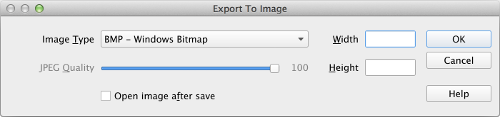
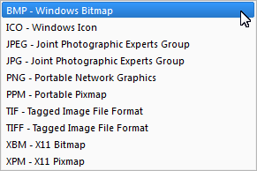

to bring 3D Drawer window (available when system dimension is 2
or greater). You can open few windows by clicking this button multiple
times.
to bring 3D Drawer window (available when system dimension is 2
or greater). You can open few windows by clicking this button multiple
times.
Click to bring 3D Drawer window (available when system dimension is 2
or greater). You can open few windows by clicking this button multiple
times.
Here you can choose what variable to assign to what axis and rotate solutions drawing using slides and spinners on the left side. Left/right click + mouse drag rotate by XY and XZ exes respectively. Use Zoom spinner to scale the drawing.
Click Pan button  to enter Panning mode (mouse cursor changes). You can drag
your drawing for exploring its different parts.
to enter Panning mode (mouse cursor changes). You can drag
your drawing for exploring its different parts.
Click Drawer Settings button  to bring settings window:
to bring settings window:
Here you can:
Click Export to File button to open Export window:

Here you can:

This list is platform-dependent.
Click Help button to open Runge Manual.